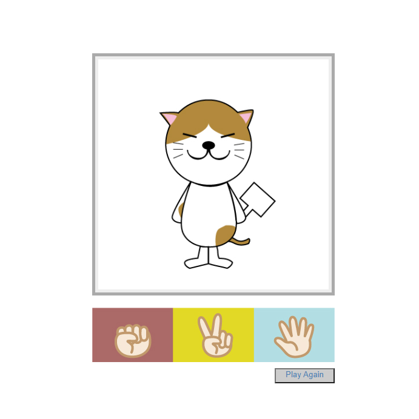

PORT
FOLIO
Suzuki Taiyo
keyboard_arrow_down
Works
close

-
「ランディングページ」
- 制作の留意点：
- 20~30代の女性をターゲットにしたランディングページです。
ブランドイメージと清潔感を感じられるように心がけました
- 使用ソフト：
- Brackets
実際のページへ
close
-
「レストランサイト」
- 制作の留意点：
- 誰でも気軽に入れるイタリアンレストランのサイトです。全体的に
カジュアルな印象でまとめ、配色は食欲が出るような暖色でまとめました。
- 使用ソフト：
- Visual Studio Code, Illustrator 2020
実際のページへ
close
- 
-
「ジャンケンゲーム」
- 制作の留意点：
- HTML/CSS, JavaScriptで作ったじゃんけんゲームです。
ゲームウィンドウなどはCanvasを使用し実装しました。
イラストはIllustratorで作りました。
- 使用ソフト：
- Visual Studio Code, Illustrator 2020
実際のページへ
close
-
「Todoリスト」
- 制作の留意点：
- JavaScriptのフレームワークであるVue.jsの練習で作った
Todoリストです。Vue.jsについてはこれから知識を深めていきたいと思っています。
- 使用ソフト：
- Visual Studio Code
実際のページへ
close
-
「ブライダルフライヤー」
- 制作の留意点：
- ブライダルのキャンペーンフライヤーです。春を感じられるような配色にしました。イベント内容が分かるように枠ごとに整列
させました。
- 使用ソフト：
- Illustrator 2020
実際のページへ
close

-
「グラフィック作品等」
- 制作の留意点：
- これまでに、IllustratorやPhotoshopで作ったものなどです。
- 使用ソフト：
- Illustrator, Photoshop
実際のページへ
About me

-
- 鈴木 太陽 / Suzuki Taiyo
- 船橋情報ビジネス専門学校
- Webクリエイター科在籍
- できること :HTML/CSS、JavaScript、Illustrator、Photoshop
- 趣味 :散歩、音楽鑑賞、昼寝、ゲーム
- 連絡先 :x20w020@mitsuhashi.ac.jp